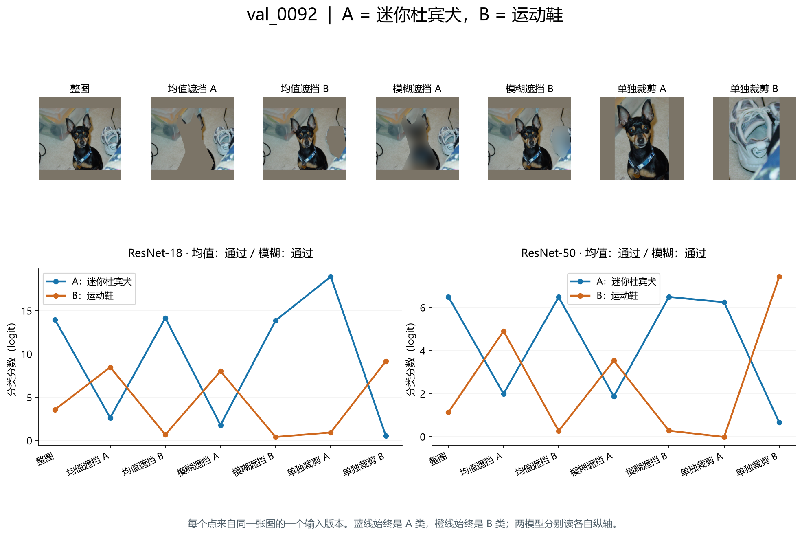
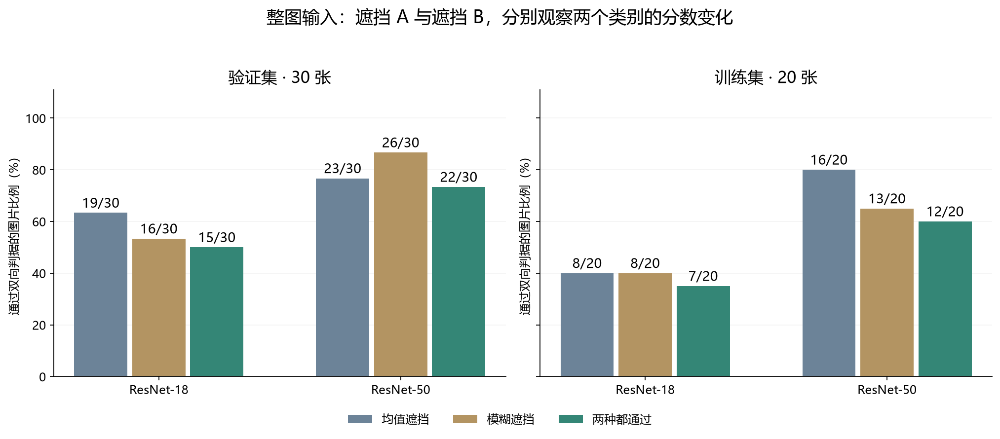
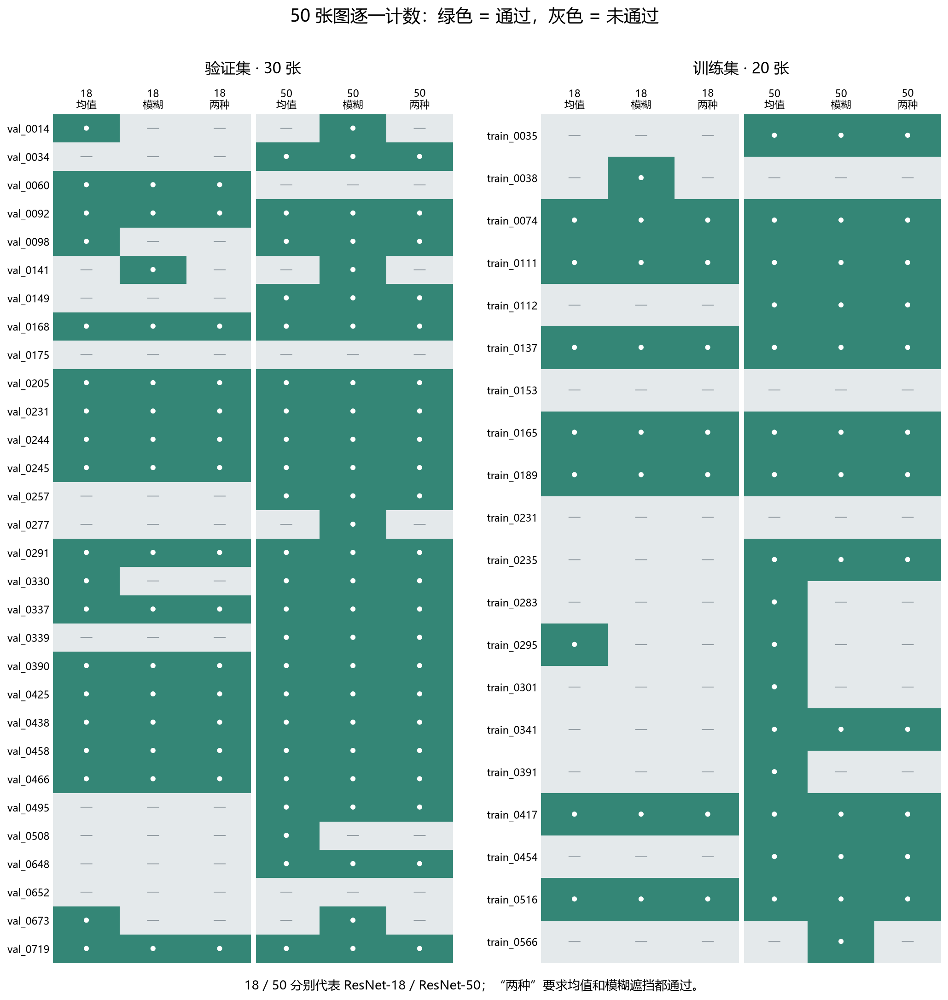
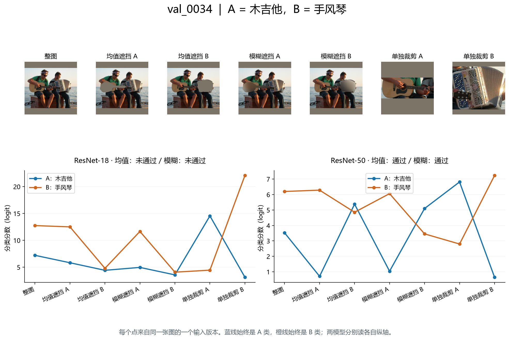
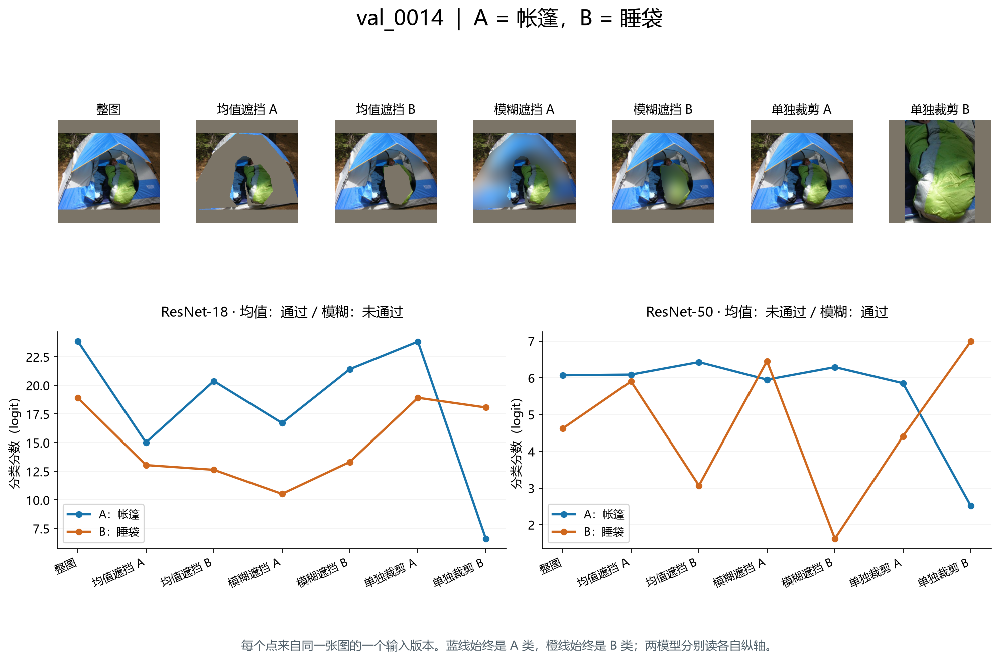
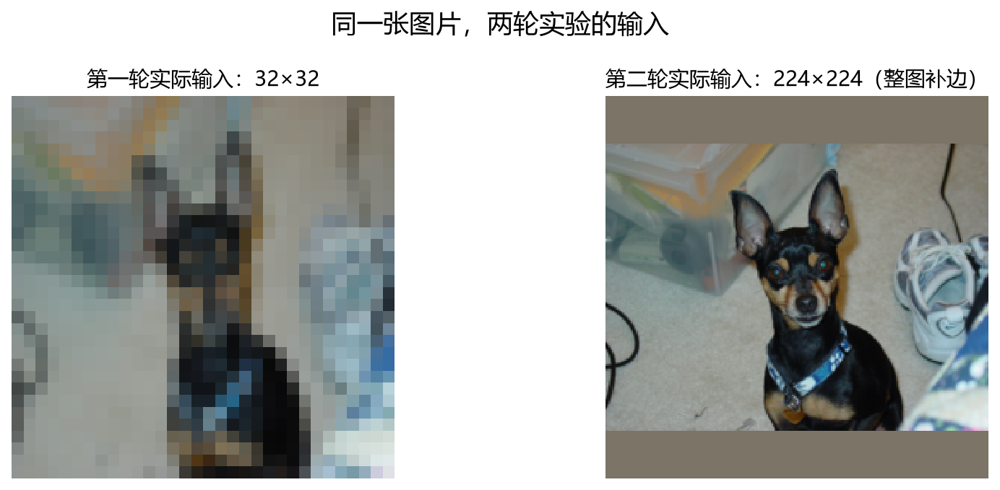
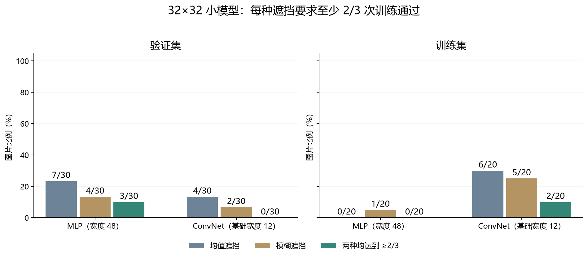
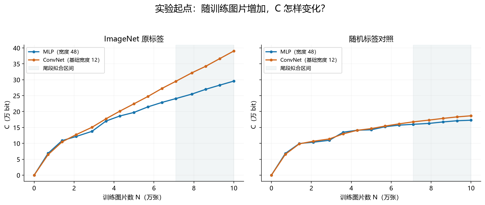

一张图里的两个物体：
分类模型的交叉遮挡实验
把图中的狗遮住，狗这一类的分数怎样变？把旁边的鞋遮住，又怎样变？我们在同一批 50 张图片上，分别记录两个类别对不同遮挡的响应。
实验：2026 年 10 月 9—18 日 · 整理发布：2026 年 10 月 27 日
01 / 先看一张图：狗与鞋
ImageNet 分类模型为 1,000 个类别分别计算一个分数，再选最高分作为预测。下面这张图中，我们把狗记作 A，鞋记作 B。每次只改动一个标注区域，其余像素保持原样。

均值遮挡
把物体标注区域填成固定颜色。这里使用模型输入的 RGB 均值，因此图中呈灰褐色。
模糊遮挡
先对输入图做高斯模糊，再把标注区域替换成对应的模糊像素。物体的大致颜色和轮廓仍可能可见。
横轴是一张图的不同版本；纵轴是分类分数，称为 logit。它是模型转成概率之前的数值。沿同一条线看，就能知道某一类别的分数在遮挡前后如何变化。
怎样算一张图“通过”？
先检查 A：遮挡 A 后，A 的分数要下降；这个下降量还要大于遮挡 B 对 A 造成的下降量。再把 A、B 对调，检查 B 是否也满足同样条件。两个类别都满足，记作“双向通过”。均值和模糊分别计数；“两种都通过”取二者交集。
用公式表示同一条规则
设 zA(原图) 是原图的 A 类分数。ΔA(遮 A) = zA(原图) − zA(遮 A)，其他下降量按同样方式定义。
ΔA(遮 A) > 0，且 ΔA(遮 A) > ΔA(遮 B)
ΔB(遮 B) > 0，且 ΔB(遮 B) > ΔB(遮 A)
本文使用的阈值就是严格大于 0；没有额外规定最小下降幅度。
02 / 在 50 张图片上逐一计数
这 50 张图按随机顺序浏览候选后，选出含两个可标注类别的图片；筛选时未查看模型输出。其中 30 张来自 ImageNet 验证集，20 张来自训练集。两种模型使用同一批图片，直接加载公开权重，不再训练。
主分析保留整张图：把长边缩到 224 像素，短边按比例缩放，再补边到 224×224。下图将两种来源分别统计，每张图片只计一次。

| 来源 | 模型 | 均值遮挡通过 | 模糊遮挡通过 | 两种都通过 |
|---|---|---|---|---|
| 验证集 | ResNet-18 | 19/30（63.3%） | 16/30（53.3%） | 15/30（50.0%） |
| 验证集 | ResNet-50 | 23/30（76.7%） | 26/30（86.7%） | 22/30（73.3%） |
| 训练集 | ResNet-18 | 8/20（40.0%） | 8/20（40.0%） | 7/20（35.0%） |
| 训练集 | ResNet-50 | 16/20（80.0%） | 13/20（65.0%） | 12/20（60.0%） |
在验证集中，有 14 张图在两种模型、两种遮挡下均通过；训练集中对应为 7 张。完整的逐图记录如下。

03 / 三种结果，分别看图
狗与鞋：两种模型、两种遮挡都通过
回看图 1：遮挡狗时，蓝线下降；遮挡鞋时，橙线下降。两种模型对两个类别均满足双向判据。各自裁剪后，狗和鞋在两种模型中的类别排名都是第 1。
吉他与手风琴：裁剪排名相同，整图遮挡结果不同

左下图中，遮挡手风琴时，吉他分数下降得比遮挡吉他时更多，因此 ResNet-18 没有满足 A 的比较条件。右下图中，ResNet-50 的吉他分数在遮挡吉他时下降、遮挡手风琴时上升；手风琴也满足对应条件。
帐篷与睡袋：填充方式改变通过结果

先要求两个裁剪都能认出，计数是多少？
“裁剪通过”指 A 类在 A 的裁剪中排进前 5，且 B 类在 B 的裁剪中也排进前 5。我们再单列其中两个裁剪框都不含另一目标标注像素的图片。下表每个格子的分子仍是“两种遮挡都通过”，分母随筛选条件变化。
| 来源 | 模型 | 全部图片 | A/B 裁剪均进前 5 | 再要求裁剪不含另一目标 |
|---|---|---|---|---|
| 验证集 | ResNet-18 | 15/30（50.0%） | 10/17（58.8%） | 0/3（0.0%） |
| 验证集 | ResNet-50 | 22/30（73.3%） | 17/22（77.3%） | 2/3（66.7%） |
| 训练集 | ResNet-18 | 7/20（35.0%） | 1/7（14.3%） | 0/1（0.0%） |
| 训练集 | ResNet-50 | 12/20（60.0%） | 9/15（60.0%） | 5/6（83.3%） |
例如，ResNet-50 的 30 张验证图中，22 张满足裁剪前 5 条件，其中 17 张在两种遮挡下都通过；再排除裁剪框包含另一目标的情况后，剩 3 张，其中 2 张通过。
04 / 此前的 32×32 小模型实验
同一批 50 张图片，第一轮使用 32×32 输入，以及自行训练的 MLP 和小型 ConvNet。每种模型训练 3 次，种子为 7101、7102、7103；每次使用 100,000 张训练图片，训练 300 轮。

| 模型 | 训练准确率 | 验证准确率 |
|---|---|---|
| MLP（宽度 48） | 12.38% | 2.10% |
| ConvNet（基础宽度 12） | 19.93% | 5.49% |
准确率为这轮保存的 3 个重训 checkpoint 的均值；训练准确率在 100,000 张训练图片上计算，验证准确率在 50,000 张验证图片上计算。它们与下面 50 张双物体图的遮挡通过比例是不同统计量。

第二轮更换为公开 ResNet checkpoint，并使用 224×224 输入和重新审核的原图标注。上面的两轮图表分别采用各自的训练与计数设置。
05 / 最初的问题来自 C–N 曲线
在遮挡实验之前，我们改变训练集大小 N，记录模型训练后的损失。损失衡量模型对正确标签分配的概率：给正确标签的概率越高，损失越低。
对于 1,000 个类别，如果对各类都给相同概率，平均损失是 ln(1000)。将实际训练损失 L 相对这个基准的减少量乘以图片数，并换成 bit，定义：
下面横轴是训练图片数，纵轴是 C。每条线上的点取 3 个训练种子的均值；N=0 的点按定义设为 0。

用最后 5 个点拟合直线，再将斜率除以 log₂(1000)，得到这里记录的归一化尾段斜率（structance 的测量值）：
| 标签 | MLP | ConvNet |
|---|---|---|
| ImageNet 原标签 | 0.1921 | 0.3274 |
| 随机标签 | 0.0476 | 0.0673 |
这组曲线记录的是训练损失随数据量的变化；本页的遮挡实验记录的是固定 checkpoint 对图片局部改动的分数响应。两部分数据在此分别呈现。
06 / 参数、对照与数据口径
公开 ResNet 实验
| 项目 | 设置 |
|---|---|
| 模型权重 | torchvision ResNet-18：IMAGENET1K_V1；ResNet-50：IMAGENET1K_V2 |
| 类别与样本 | 1,000 类；复用同一批 30 张验证图 + 20 张训练图 |
| 整图输入 | 长边 224，等比例双线性缩放；居中均值补边至 224×224 |
| 归一化 | RGB 均值 [0.485, 0.456, 0.406]；标准差 [0.229, 0.224, 0.225] |
| 物体区域 | 审核后的原图多边形；按输入几何变换映射到模型输入 |
| 均值 / 模糊填充 | RGB 均值填充；高斯模糊核 63×63、σ=14，反射边界 |
| 单独裁剪 | 原图目标标注的紧致矩形框，均值补成正方形后缩放至 224×224 |
| 推理 | CPU FP32；batch=8；8 个计算线程；eval 模式 |
| 用时与数量 | 2,171 个模型输入条件；推理阶段约 69.43 秒；进程峰值内存 1023.5 MiB |
官方中心裁剪对照
官方预处理将短边缩至 256（ResNet-18）或 232（ResNet-50），再从中心裁出 224×224。下面只统计 A/B 标注面积都保留至少 90% 的图片，分母写在表中。
| 来源 | 模型 | 满足保留条件 / 所选图片 | 两种遮挡都通过 / 满足保留条件 |
|---|---|---|---|
| 验证集 | ResNet-18 | 4/30 | 2/4（50.0%） |
| 验证集 | ResNet-50 | 10/30 | 6/10（60.0%） |
| 训练集 | ResNet-18 | 2/20 | 0/2（0.0%） |
| 训练集 | ResNet-50 | 4/20 | 2/4（50.0%） |
同形状背景遮挡
将 A 或 B 的遮挡形状平移到背景，保持形状与面积一致，避开所有已标注物体和补边。每个目标最多取 10 个位置。较大物体的遮挡形状经常找不到足够位置，因此下表只包括 A/B 各有 10 个位置的图片。
这项计数要求先通过均值遮挡双向判据，并且遮挡目标本身造成的分数下降，大于它对应的全部 10 个背景遮挡造成的下降。
| 来源 | 模型 | 背景对照完整的图片数 | 达到背景比较条件 |
|---|---|---|---|
| 验证集 | ResNet-18 | 2 | 0/2 |
| 验证集 | ResNet-50 | 2 | 2/2 |
| 训练集 | ResNet-18 | 2 | 0/2 |
| 训练集 | ResNet-50 | 2 | 1/2 |
32×32 训练与 C–N 实验参数
MLP 宽度 48；ConvNet 基础宽度 12；AdamW，初始学习率 0.002，weight decay=0，batch=4096；前 5 轮 warmup，随后 cosine 降至 0.00002；总计 300 轮；bf16 autocast、FP32 参数。C–N 使用 14 个正 N：7k、14k、21k、29k、36k、43k、50k、57k、64k、71k、79k、86k、93k、100k，另加解析原点。每种模型、标签和 N 组合训练 3 个种子，共 168 个配置。
32×32 遮挡使用 N=100k 的 6 个重训 checkpoint。均值填充与输入归一化均值一致；模糊核 9×9、σ=2。图 7 使用每图至少 2/3 种子通过的计数。